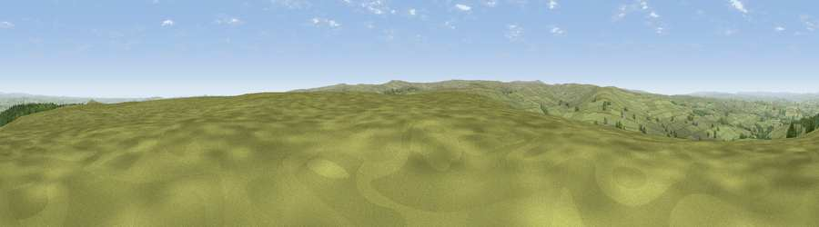

Viewpoint near Blanchland
#9147 in England · top 14% of its area beats it · near BlanchlandWhere it is
The exact computed spot (NY 94025 52825). Click the marker for map links.
The view, rendered

A 360° render of this exact spot computed from the terrain model, tree cover and land cover — summer colours, afternoon light, calibrated against photographs of famous viewpoints. Real trees, hedges and buildings will differ in detail.
The panorama
Grey silhouette: terrain skyline in each direction (720 bearings, Earth curvature and refraction included). Dashed green: skyline with trees (+15 m) and buildings (+8 m) as obstacles. Blue strip: how far the ground is visible on each bearing.
Where the view opens
Wedge length = distance to the farthest visible ground on that bearing (vegetation-aware). Rings at 10, 25 and 50 km.
What fills the view
90% grassland · 7% woodland · 3% cropland
Angular shares of the visible panorama (visual magnitude), not map area. Landscape diversity 0.17 (0–1 Shannon).
Key numbers
More beautiful places nearby
The staircase of upgrades: each row has a higher view potential than everything closer. Driving times are estimates from straight-line distance, calibrated against real road routing — check an actual route before setting out.
| Place | Direction | Drive | Score |
|---|---|---|---|
| Viewpoint near Blanchland | NE · 1 km | ~3 min | 67.7 |
| Viewpoint near Whitley Chapel | W · 3 km | ~8 min | 68.2 |
| Watson's Pike | W · 5 km | ~11 min | 68.3 |
| Viewpoint near Slaley | ENE · 7 km | ~14 min | 69.8 |
| Viewpoint near Rookhope | S · 7 km | ~15 min | 70.4 |
| Collier Law | SE · 13 km | ~24 min | 71.7 |
| Viewpoint near Allenheads | SW · 14 km | ~26 min | 74.6 |
| Pontop Pike | E · 21 km | ~35 min | 77.8 |
54.87016, -2.09463 · source: screening · position refined by local search. Computed location — check access rights before visiting.